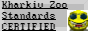

welcome to the zoo
Welcome to the zoo... yes, a wonderful zoo... Welcome, welcome! You are free to look around, look at many animals, do not touch though. No touching!
Worry not for safety of animal and yourself. We have very good certification, all animals are taken care of very nice. 